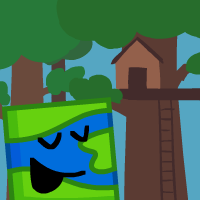

Map of the World
Gender: male
Pronouns: he/him
Age: 21
Purple: no
Shockingly adept at music, Map of the World (MOTW) is a lot like NAM without copying. While NAM likes to be stupid to get a reaction, MOTW is actually just stupid. He likes to have fun and gets bored very easily. #2 Weird Al fan behind Me, who is writing!
Voiced by: Bepis